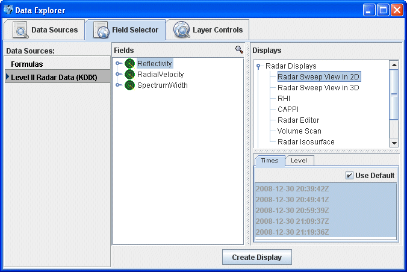
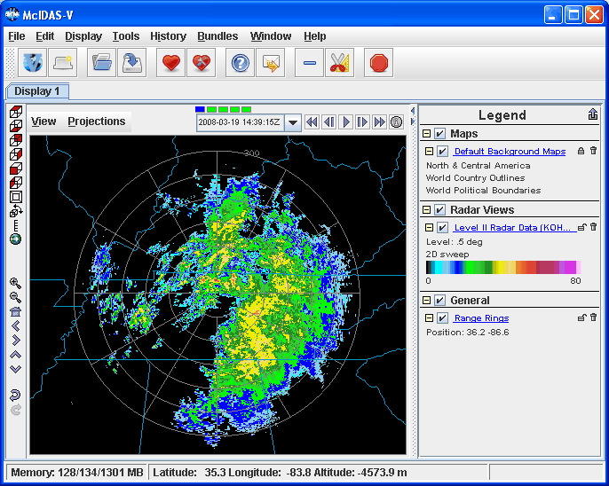
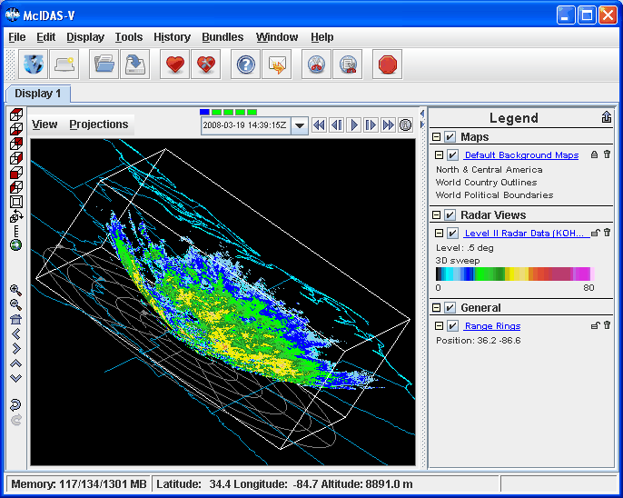
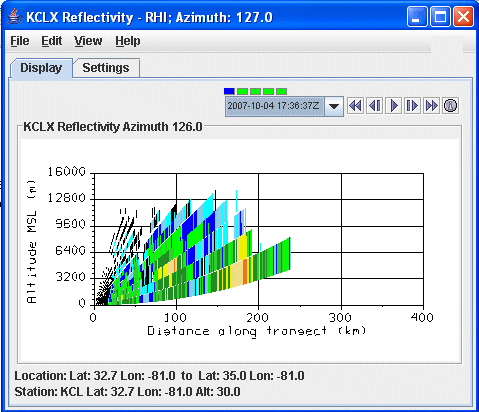
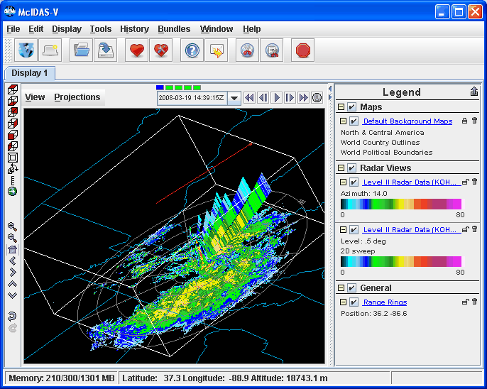
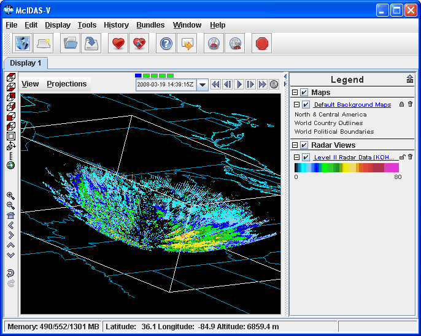
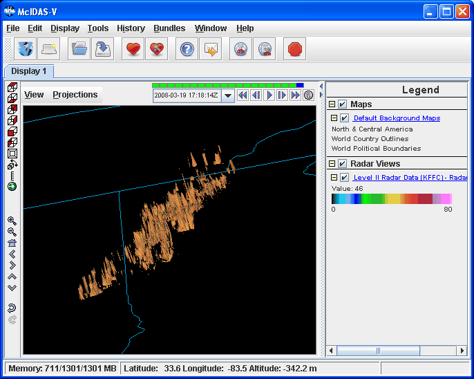

Unidata's Integrated Data Viewer > Getting Started
Unidata's Integrated Data Viewer > Getting Started

2.2 Level II Radar
This section describes how to create displays from
WSR-88D Level II data. The set of steps include:
2.2.0 Accessing WSR-88D Level II Radar Data
The Level II data is supplied as volume-scan files,
each file having all data from one WSR-88D radar
for all sweeps for one "time". Unidata
Community sites can receive Level II data using the
Unidata Local Data Manager (LDM). Archived Level II data is
available from the National
Climatic Data Center (NCDC) (data from NCDC must be un-tarred).
The files should be stored on your file system with each station's files
in a directory (folder) whose directory name is the station
4-character ID (e.g., KTLX for Oklahoma City). In many cases the data
files do not have any location information in them and the IDV uses the
directory name as a first guess at the station location. Otherwise,
use the Radar Location widget to specify the location.
2.2.1 Choosing Level II Radar Data
In the Data Source Chooser
window click on the Radar tab and then the
Level II tab.
Use the file chooser to find the directory which holds the data you
want to display. Click on a file name you desire (multiple files can be
selected with the Shift or Control keys) or select
the latest N files. When you have
selected all files you need, click the Add Source button.
2.2.2 Making Level II Radar Displays
The data source is shown in the
Field Selector window.
Level II
data has three moments or data types: Reflectivity, RadialVelocity,
and SpectrumWidth. The IDV has several kinds of displays for Level II
data. Any of the moments can be shown with any of the displays. Here we
will use examples showing reflectivity. Clicking on the "Reflectivity"
entry in the Field panel will show the list of available
displays in the Displays panel.

2.2.3 2D Displays of Individual Sweeps

Image 1: Level-II 3D Display
Select the Radar Sweep View in 2D in the Displays panel and
click on Create Display. Radar Sweep View in 2D plots the
data as an colored image on the base of the 3D display area. This
mimics conventional PPI plots on a map.
The
Radar Sweep Control
allows you to change which sweep elevation you want
to see. You can add range rings with the menu item. You can modify the range rings with the
Radar Range Rings
control.
2.2.4 3D Displays of Individual Sweeps

Image 2: Level-II 3D Display
Select the Radar Sweep View in 3D entry in the Displays panel.
Radar Sweep View in 3D plots the data as an colored image, with the
data plotted in 3D space at the elevation where the sweep occurred. You
can rotate the display to see the
three dimensional nature.
You can use this display to merge radar data display with upper
air data such as the IDV plots of NOAA Profiler data. Since
the Earth is projected onto a flat surface in this display,
the sweep has a shape very close to a rotated parabola. The Radar Sweep Control
allows you to change which sweep elevation to display.
2.2.5 Pseudo-RHI Displays in 2D and 3D

Image 3: Level-II 2D RHI | 
Image 4: Level-II 3D RHI |
Select RHI in the Displays panel and press Create Display.
RHI plots the data as an colored vertical cross section at the true
elevations of the beams in 3D space (bottom illustration). This pseudo-RHI is
constructed from several horizontal sweeps of the radar. You may have to rotate
the display to see the RHI in 3D.
The beam width is indicated by the vertical extent of each colored
vertical stripe, corresponding to a bin beam bin sample. Beam overlap is clear.
Position of the RHI in azimuth can be adjusted by dragging the little box
on the end of the selector line above the RHI.
The 2D plot of pseudo-RHI (top illustration) is shown in the RHI Control. That control
also has an auto-rotate feature. The RHI displays have time animation.
2.2.6 All Sweeps in 3D

Image 5: Level-II Volume Scan
Select "Reflectivity" in the Field panel and select Volume
Scan (all sweeps) in the Displays panel. Volume Scan (all
sweeps) plots the data as 3D field of points colored by value. Each
point is a bin value; all sweeps and bins are shown.
2.2.7 Radar Isosurfaces in 3D
Select "Reflectivity" in the Field panel and select
Radar Isosurface in the Displays panel. An isosurface
is a 3D analog of a contour line. It shows the location of all data
with a single data value. Interpolation is used between sweep altitudes
in the IDV isosurface plot of Level II data. All data in a volume
scan is used. The example shown is the 50 dBZ isosurface from a line
of thunderstorms crossing Oklahoma at 1330Z 11 Sept 2003. Vertical
exaggeration is 13 to 1.

Image 6: Level-II Isosurface
Unidata's Integrated Data Viewer > Getting Started